Home
Query
Quiz
SiteMap
Thumbanail Image
Additional
Product
About Us
Home
Query
Quiz
SiteMap
Thumbanail Image
Additional
Product
About Us
Rice and Curry
In Sri Lanka, as well as the Indian Subcontinent, rice with curry is a popular meal. Chili cardamom, cumin, coriander,
and other spices are used in the curry. It has a unique flavor. In Sri Lanka people mostly eat rice and curry for their
main three meals.While natives are born into this cuisine and develop a tolerance to spicy food, many visitors and tourists
who visit the country often find the spiciness overwhelming. As a result, many local restaurants in developed and tourist
locations provide low-spice versions of local dishes to appeal to foreign palates, or offer a "western" menu for visitors
and tourists.
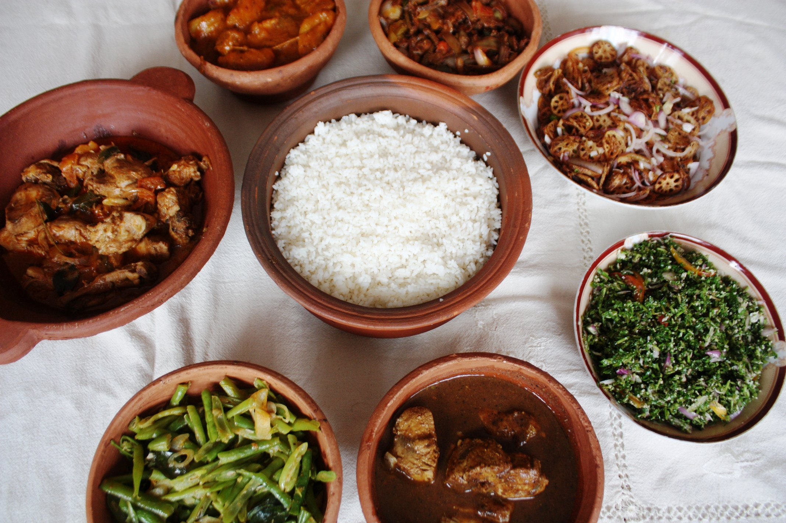
Kiribath
Kiribath is a rice-based traditional Sri Lankan meal. It's made by cooking rice with coconut milk, thus
the name, and may be thought of as a rice cake or pudding. In Sri Lankan cuisine, kiribath is a must-have.
It is traditionally offered for breakfast on the first day of each month, but it also has the extra meaning
of being eaten at any fortunate juncture in one's life that marks a transitional period.
It is one of Sri Lanka's most well-known traditional foods.
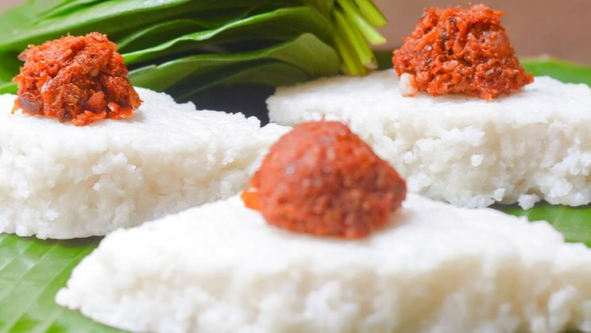
coconunt roti
Coconut Roti, also known as Pol Roti, is a rustic flatbread baked with wheat, shredded coconut, chopped green
chilies, and onions for added texture. Curry, sambol, lunumiris, butter, and jam are some of the spicy and sweet spreads
that may be served with the roti. Coconut Roti might also be accompanied by jaggery and bananas. Coconut Roti is
typically served as a breakfast or supper dish, but it may also be enjoyed as a teatime snack. In addition, Coconut
Roti is a popular street meal in Sri Lanka that should be tasted at least once.

Avocado
In Sri Lanka, avocado, one of the healthiest fruits, is abundantly farmed. Avocado is high in nutrients and has a variety
of medical properties, including being beneficial for the heart and improving eyesight. Avocados are high in fiber, which
aids with weight loss. Furthermore, avocado consumption is thought to reduce the incidence of elevated cholesterol levels.

Breadfruit
Breadfruit can be eaten as a fruit when fully mature, or as a vegetable when not fully ripe. The breadfruit leaf is
thought to decrease blood pressure and alleviate asthma. This fruit is high in fiber, calcium, and iron, among other
minerals.
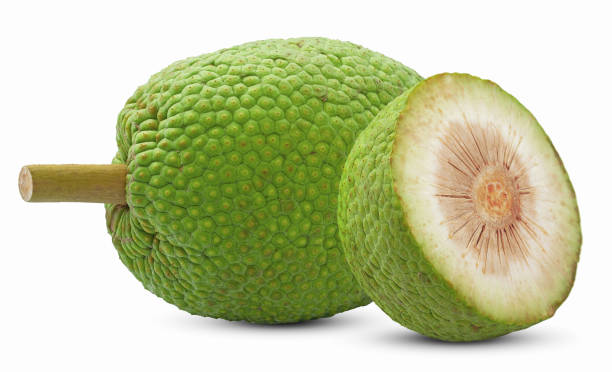
Breadfruit
A nutritional tropical fruit found in Asia, Mango is known to be the “king of fruits” for its delicious taste.
There are various types of Mango that has several flavours. This fruit has medicinal value since it rich in fiber, vitamins
and minerals. It is believed by the scientists that mangos are known to offer protection against breast and colon cancers,
leukemia and prostate cancers.

Pineapple
Because the fruit Pineapple is commonly accessible in Sri Lanka, most tourists visiting the country look for
Pineapple is eaten in a variety of ways, including as a fruit, a juice, or a side dish with rice and curry.
The fruit is thought to be quite refreshing. The taste of this tropical fruit is sweet and tart.

Cinnamon
"Ceylon Cinnamon" is known across the world for its particular flavor, which is sweet and delicate. It is known as
the "monarch" of spices. Ceylon cinnamon, scientifically known as "Cinnamomum Zeylanicum Blume," differs from cassia
in several respects. Ceylon Cinnamon, in particular, has a distinct flavor and scent from cassia. Cinnamon is well-known
not just for being the oldest spice, but also for being beneficial to one's health. Cinnamon helps to protect patients
against diseases of the brain and nervous system. Parkinson's disease and Alzheimer's disease are two examples of such
disorders. Cinnamon also has antibacterial properties. It's well-known for being low in calories and sugar-free. Ceylon
Cinnamon is a spice that can be used in desserts and other dishes. Also, it is said that it can lose weight, improve
memory, and slower the blood clotting rate.
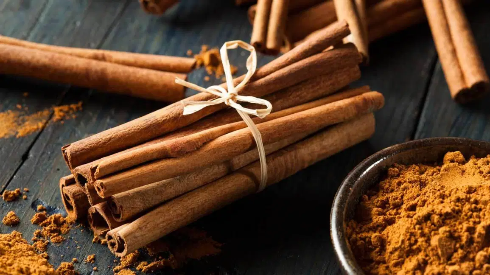
Clove
Cloves are used as both a spice and a medicine. They are fragrant flower buds that are commonly used in the production
of toothpaste, cosmetics, soaps, and fragrances. Cloves have a number of therapeutic properties, including the ability to
reduce blood coagulation. They can also be used to cure acne and maintain young skin. Cloves, on the other hand, can be
used to treat small cuts and wounds. Clove is extremely useful for cooking meats and curries since it contains carbs,
protein, energy, minerals, and dietary fiber. They also have a pleasing appearance and may also be used as a culinary
flavoring. Cloves also contain compounds that assist to reduce pain and fight infections.
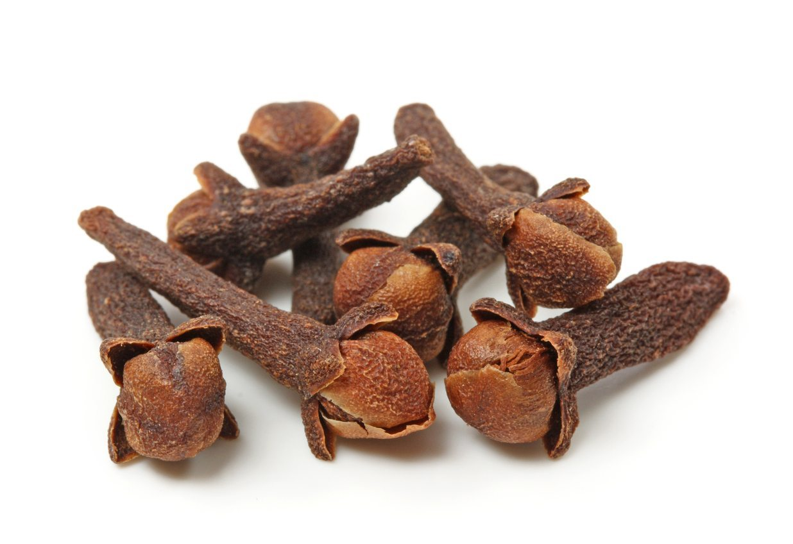
nutmeg
"Nutmeg," a popular flavor used in baking and drinks, is another sort of spice accessible in Sri Lanka. Nutmeg is very
popular in heavy foods like lamb and mutton stews and vegetable stews. Nutmeg comes from the Myristica fragrans tree,
which is technically known as "Nutmeg tree." Nutmeg is particularly useful for imparting both a sweet and savory flavor
to the food you prepare. It has a spicy and toasty scent. Nutmeg is a spice that is commonly used to fragrance soaps and
perfumes. Additionally, nutmeg ointment can be used to treat rheumatism. Nutmeg aids in the relief of pain as well as the
reduction of sleeplessness.

Kevum
"Kewum," also known as "Oil Cake," is a typical Sri Lankan sweet that may be seen on the traditional sweets table.
Rice flour, kithul (sugar palm) treacle, and other substances are used to make it. To cook this deep-fried dish, you'll
need to perfect your expertise. Kawum comes in many different types, including Konda Kawum, Mung (Gram) Kawum,
Naran (Mandarin) Kawum, Thala (Sesame) Kewum, and so on.
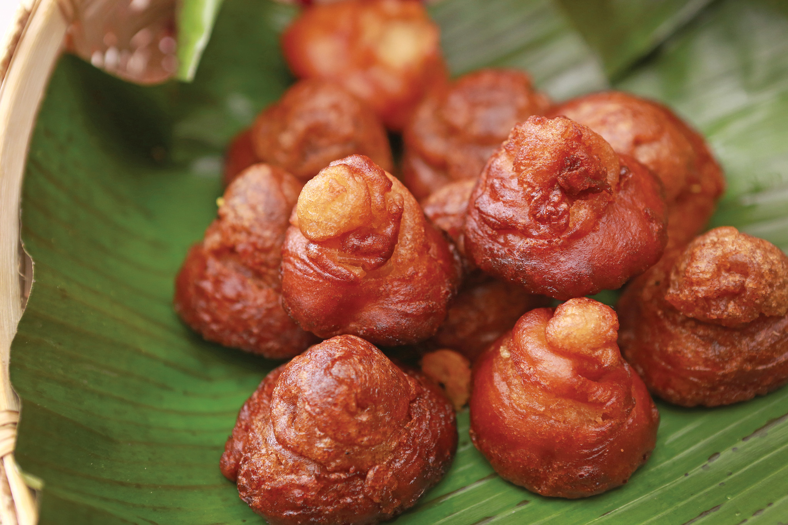
Aluwa
Another popular Sri Lankan sweet is "Aluwa," which is typically prepared with treacle or sugar. It's very tasty
since it contains components like rice flour, cardamom, and cashew nuts. When cashews are added to aluwa, it is known as
"Kadju Aluwa" (Cashew Aluwa). This is a well-known sweet among Sri Lankans and international visitors alike.
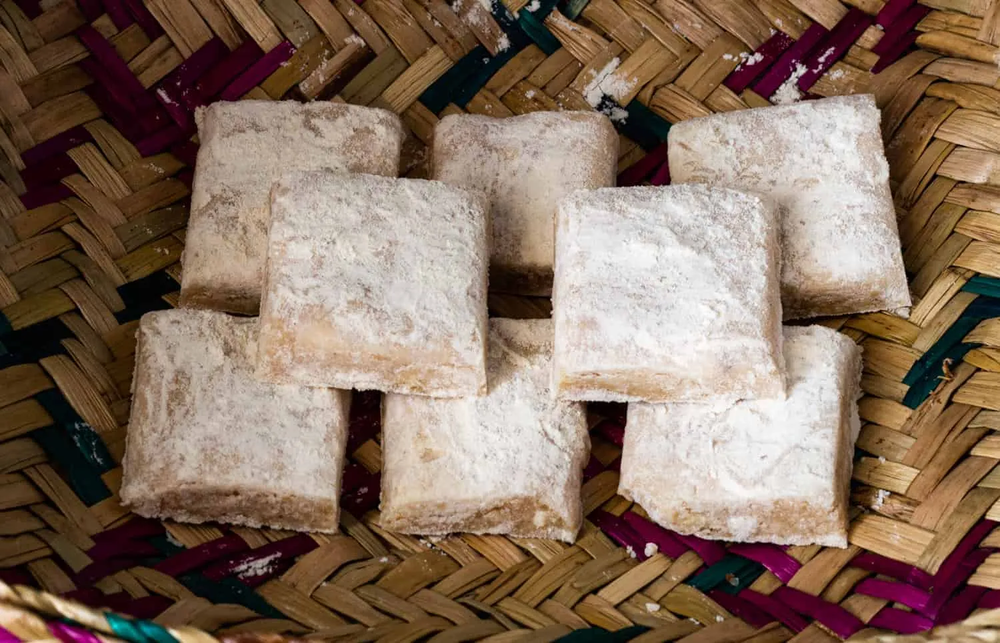
Kokis
Kokis is a crispy sweet found as an essential in the Sinhala and Tamil New Year sweets table. It is also deep fried
and is made from rice flour and coconut milk. It is believed to have come from the Dutch and is made in different shapes
depends on the mold such as flowers, butterfly etc.Kokis can be served either when it is hot or when it is cool down.
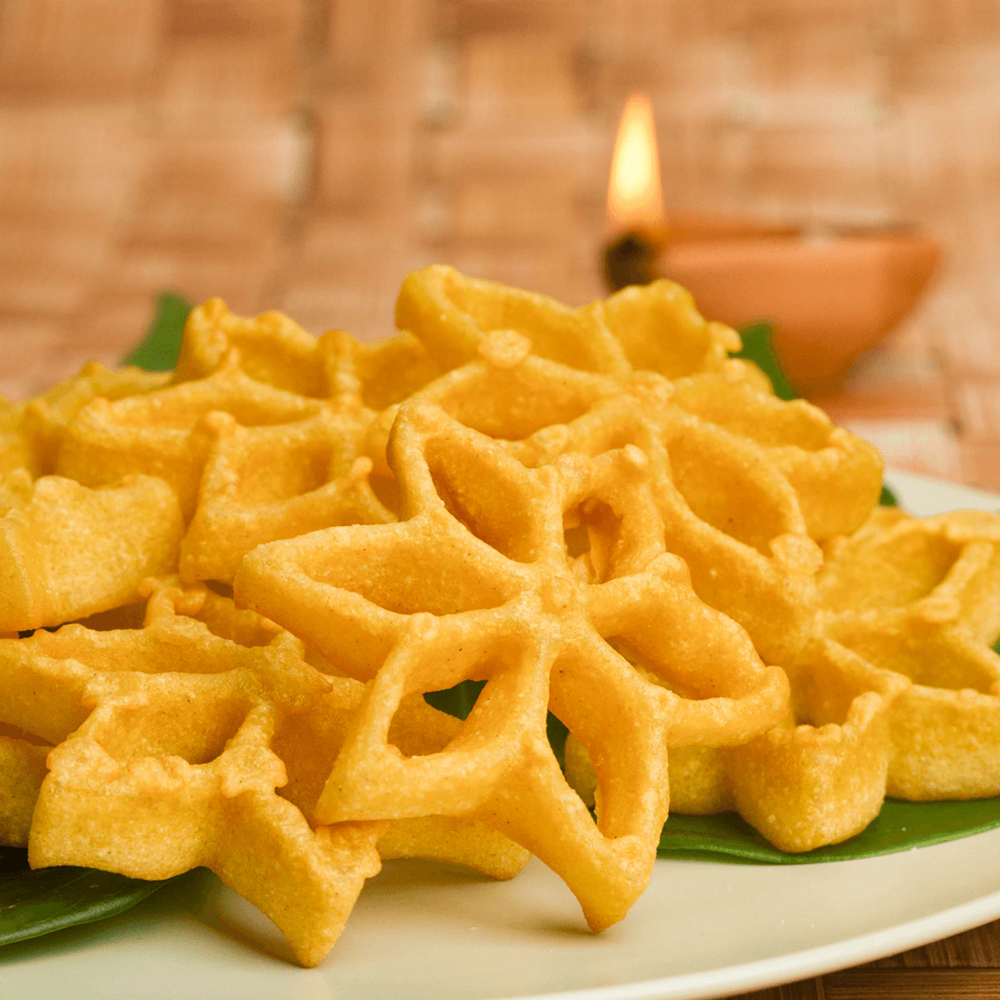
Helapa
The Sri Lankan sweet wrapped in a leaf is called as "Helapa," and it is often served with a cup of tea. It's created with
jaggery and may be enjoyed as a snack with coffee. Steamed All-Purpose Flour, Kurakkan/Finger Millet Flour, and Coconut
are also used to make "Helapa."
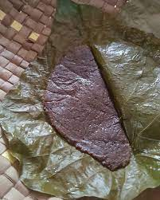
Saruwath
If you see a bright red, hot pink, or yellow beverage on the streets of Sri Lanka, it's the drink known as "Saruwath."
Oranges, kasa kasa seeds, sugar syrup, pineapple and papaya, salt, and ice are used to make this. Saruwath is a delightful
beverage with a cooling effect.
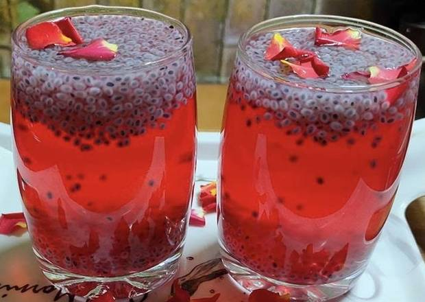
Coffee
Various sorts of coffee are offered in Sri Lanka, from five-star establishments to street vendors. Capuccino,
Espresso, Caffè macchiato, and Caffè mocha are just a few of the coffee varieties offered in Sri Lanka. Coffee has
been a key commercial crop in Sri Lanka since the British began planting coffee plants there. However, later in the
nineteenth century, Sri Lanka was hit by a coffee leaf fungal outbreak that wiped off the majority of the plantations.

Tea
Sri Lanka, the island nation known for its tea manufacturing across the world, is the perfect place to have a cup of tea.
There are a plethora of tea flavors to choose from. You may choose from a variety of teas, ranging from green tea to black
tea, depending on your requirements. Sri Lanka, often known as "Ceylon Tea" across the world, has tea museums that
visitors may visit. Additionally, tourists are permitted to see select tea facilities in order to have a better
understanding of how tea is manufactured.

Belimal
The herbal drink "Belimal," which can be found in Sri Lanka, is well-known for its medical properties. This fruit,
which is thought to be more nutrient-dense, is native to Sri Lanka. Beli-mal, a hot beverage, is cooked for longer to
give it a richer flavor. It helps the body cool down. Consumers usually drink beli-mal with jaggery because the beverage
has a bitter taste.
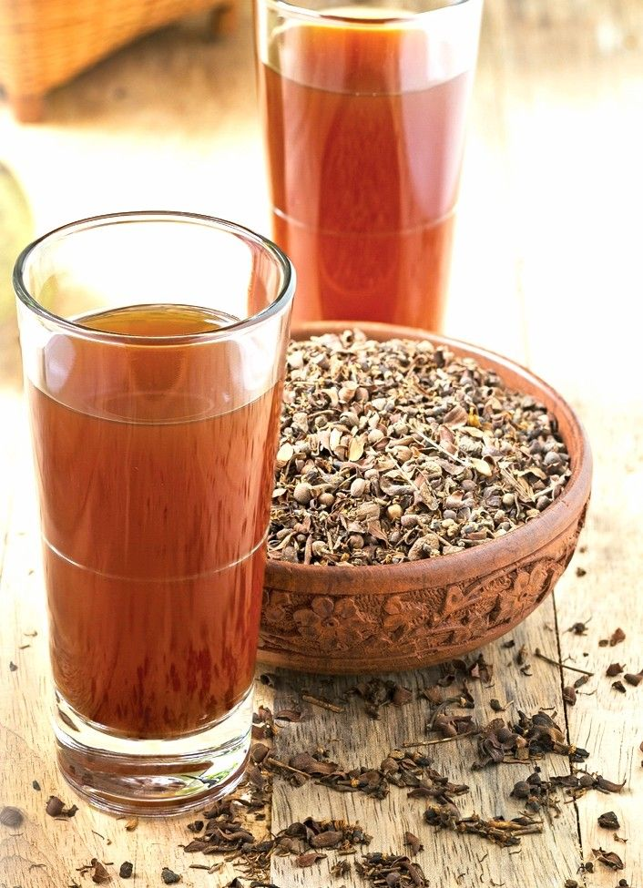
Milk Tea
Sri Lankan Milk Tea, often known as "Tea Latte," is a popular beverage in the country. Sri Lankans are known for
drinking milk tea every day, in the morning and evening. Milk tea, too, is created using steamed milk that has been
combined with tea. Depending on your preferences, you can use Soy Milk, Cow's Milk, or Almond Milk.